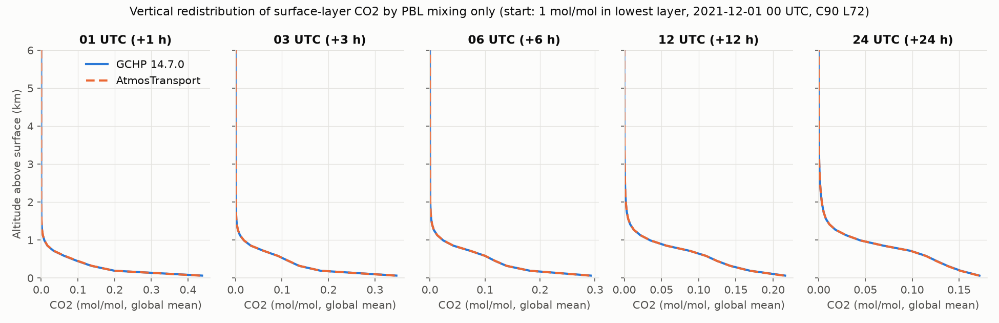
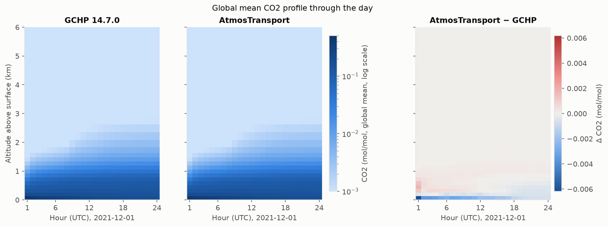
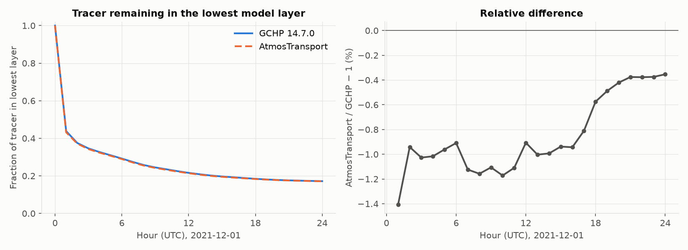
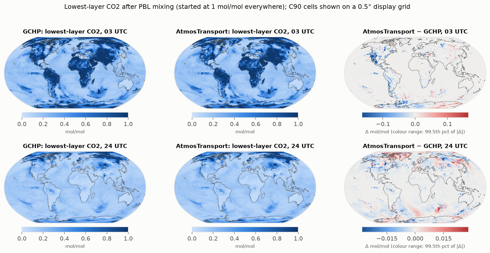
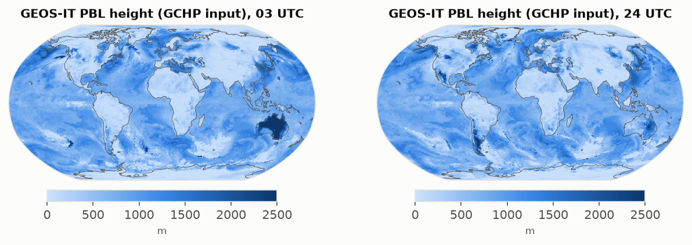

Boundary-layer mixing only: GCHP 14.7.0 vs AtmosTransport
The experiment and why we do it
This is the first of a series of idealized forward experiments that compare AtmosTransport with GCHP one physical process at a time. Before comparing full simulations, where errors from advection, convection and boundary-layer mixing mix together, each process is tested on its own so any difference can be traced to its cause.
- Question: does AtmosTransport's port of GEOS-Chem's non-local boundary-layer scheme mix tracer vertically the same way GCHP does, given the same meteorology, grid and starting field?
- Why only boundary-layer mixing: with advection, convection, emissions and chemistry off, nothing moves the tracer except the mixing scheme, so differences between the models come from the scheme itself, its inputs (PBL height, surface fluxes), its time step, or the air-mass definition.
- Why a surface-layer tracer: CO2 = 1 in the lowest layer and 0 elsewhere is the simplest possible starting field: a mixing scheme can only spread it upward, and how fast it leaves the surface layer measures the mixing strength directly.
- Why one day: long enough to cover a full day-night cycle everywhere (deep daytime boundary layers over land, shallow ones at night), short enough that differences cannot hide behind complete mixing.
- What agreement looks like: identical global profiles and surface-layer fractions, differences limited to known setup differences (time step, air mass). Larger, systematic or regional differences would point to the scheme or its inputs.
Setup
- Only process switched on: non-local boundary-layer mixing (GCHP
use_non_local_pbl: true; AtmosTransportgeoschem_nonlocal_vdiff). No advection, convection, emissions, deposition or chemistry. - Initial condition (identical in both): CO2 = 1 mol/mol (dry) in the lowest model layer, 0 everywhere else.
- Meteorology: the same raw GEOS-IT C180 files, coarsened 2×2 to C90 by each model. AtmosTransport runs in Float64 on a GPU; GCHP on 24 CPU cores.
- Time step: GCHP mixes every 600 s; AtmosTransport 10–15 sub-steps per hour from its binary schedule.
- Known setup difference: dry air mass per layer is computed differently (GCHP: hybrid levels on dry surface pressure; AtmosTransport: each level's own humidity removed). AtmosTransport's lowest layer holds 0.65% less dry air.
Key results
- Both models move CO2 out of the lowest layer at almost the same rate: about 56% leaves in the first hour, 83% by the end of the day.
- AtmosTransport mixes slightly faster: 0.3–1.4% less tracer stays in the lowest layer (largest in the first hour).
- Global mean profiles agree to within 0.003 mol/mol at every level and hour; the tracer reaches about 2.5 km by 24 UTC.
- Cell by cell, lowest-layer values correlate at 0.994–0.999. The largest local differences are over land in the first hours (e.g. western North America at 03 UTC).
- Tracer mass: AtmosTransport conserves to ~1e-16; GCHP to ±3e-5 over the day.
Figures





Table: tracer remaining in the lowest layer
Same data as Figure 3. Download: summary_table.csv
| Hour (UTC) | GCHP | AtmosTransport | Relative difference (%) |
|---|---|---|---|
| 01 | 0.43828 | 0.43211 | -1.408 |
| 02 | 0.37498 | 0.37145 | -0.942 |
| 03 | 0.34617 | 0.34262 | -1.027 |
| 04 | 0.32671 | 0.32339 | -1.016 |
| 05 | 0.30960 | 0.30663 | -0.961 |
| 06 | 0.29220 | 0.28954 | -0.909 |
| 07 | 0.27393 | 0.27085 | -1.124 |
| 08 | 0.25737 | 0.25440 | -1.158 |
| 09 | 0.24496 | 0.24225 | -1.106 |
| 10 | 0.23511 | 0.23236 | -1.172 |
| 11 | 0.22512 | 0.22262 | -1.109 |
| 12 | 0.21609 | 0.21413 | -0.907 |
| 13 | 0.20858 | 0.20649 | -1.003 |
| 14 | 0.20187 | 0.19986 | -0.993 |
| 15 | 0.19677 | 0.19492 | -0.938 |
| 16 | 0.19269 | 0.19087 | -0.943 |
| 17 | 0.18854 | 0.18701 | -0.811 |
| 18 | 0.18434 | 0.18328 | -0.575 |
| 19 | 0.18088 | 0.18000 | -0.488 |
| 20 | 0.17815 | 0.17740 | -0.420 |
| 21 | 0.17611 | 0.17545 | -0.376 |
| 22 | 0.17446 | 0.17381 | -0.377 |
| 23 | 0.17310 | 0.17246 | -0.375 |
| 24 | 0.17184 | 0.17123 | -0.354 |
Models: GCHP 14.7.0; AtmosTransport.jl (main 740ee1f9 plus a GEOS-IT EFLUX pass-through needed for the non-local scheme). Generated 2026-10-14.